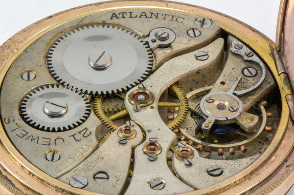
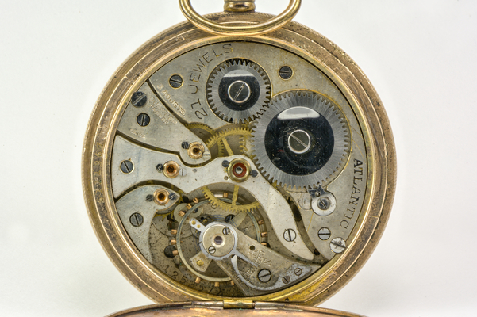
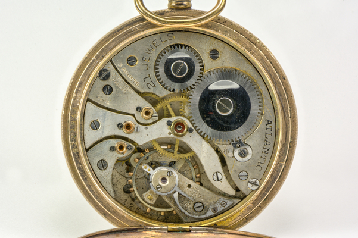
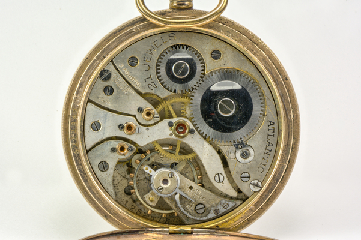

How to Maintain a Mechanical Watch
Another part of horology is working on watches. If you want to know the basics of watch maintenance then this the right place.

The First Step
First you must open the watch's case. Then you can start taking it apart.
The Second Step
You start by taking off the dial. Then you take out the escapement. Then you start taking off each bridge and the gears and other pieces connected to it.

The Inside of a Mechanical Watch


 


Eventually you get to the barrel which houses the mainspring. The mainspring is the thing that powers the watch. When you twist the crown, you are winding the mainspring.

The Second to Last Step
Once you have taken it all apart you can put it into an ultrasonic cleaner or in a special watch cleaning machine which spins the parts in a cleaning solution.
The Final Step
Now you can put the watch back together. Just go in reverse order and you should be fine.